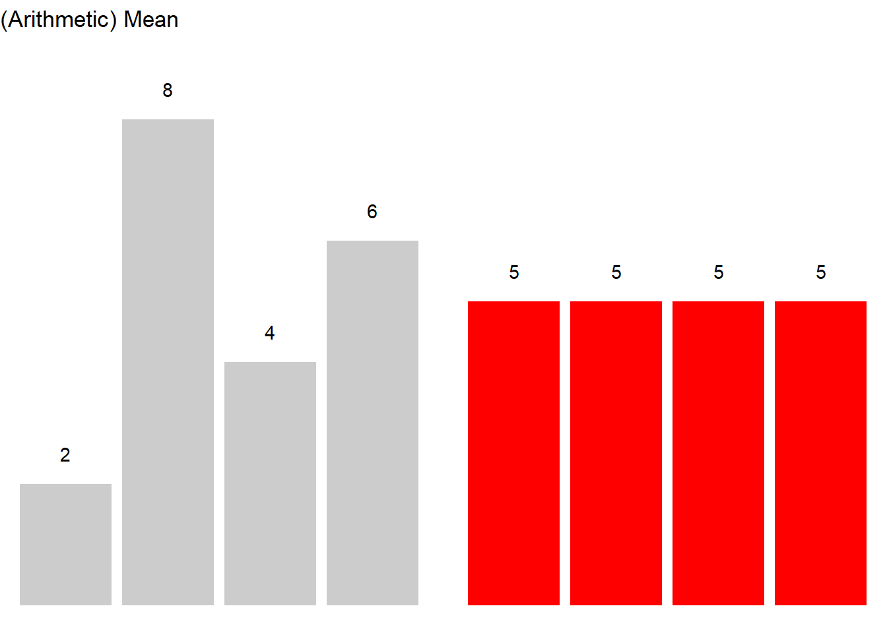
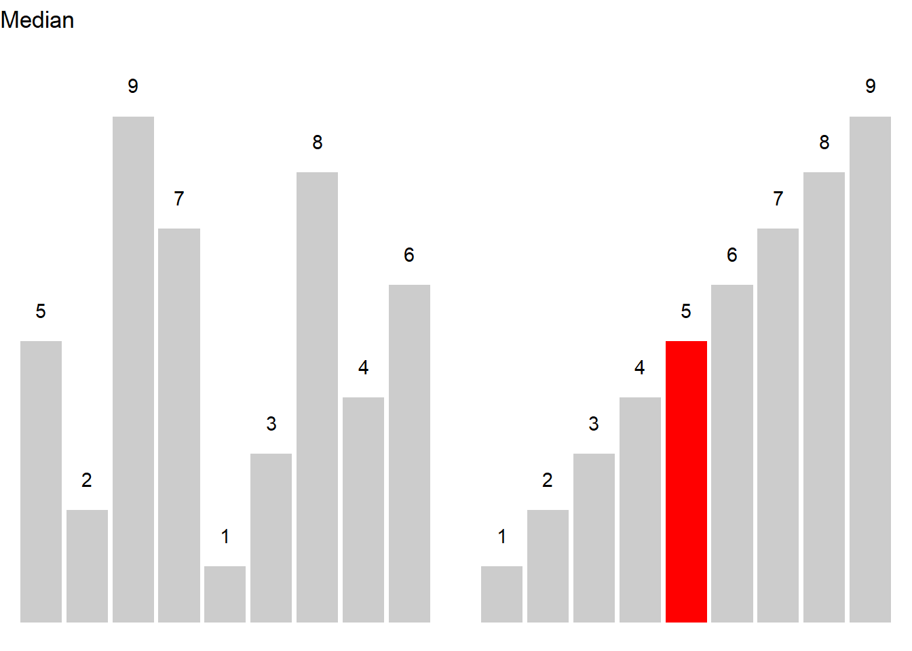
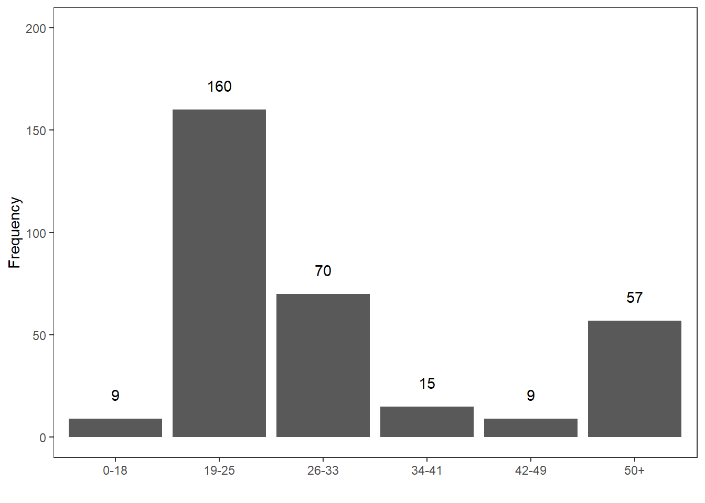
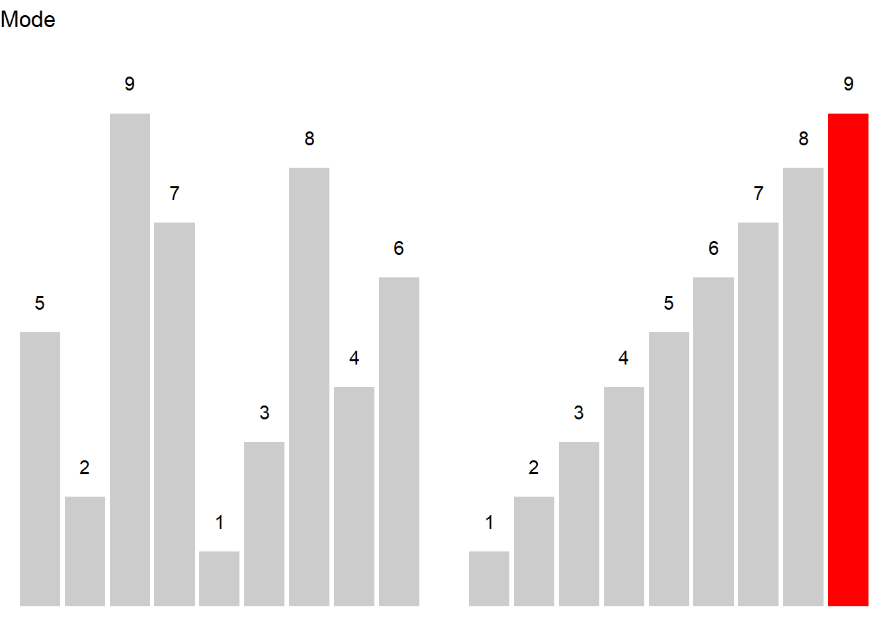
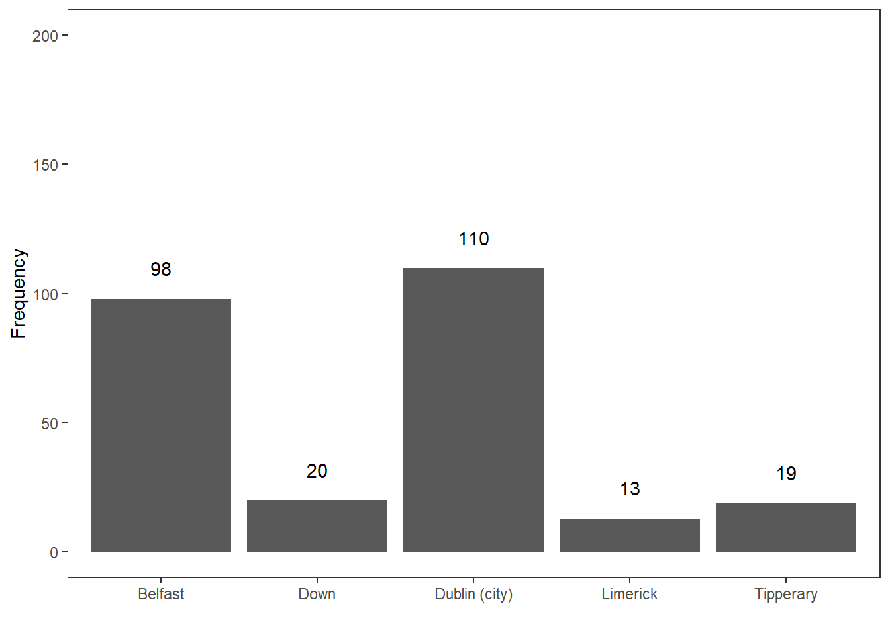
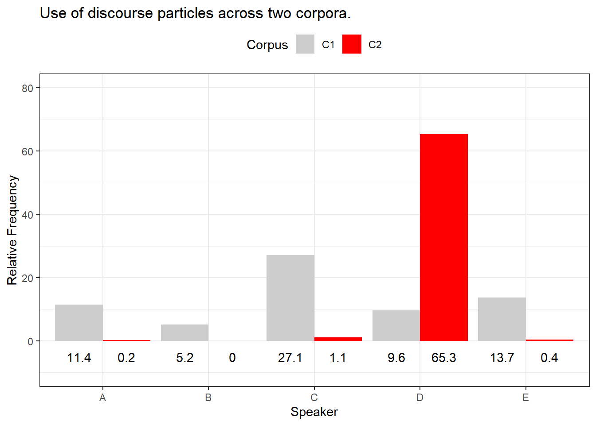
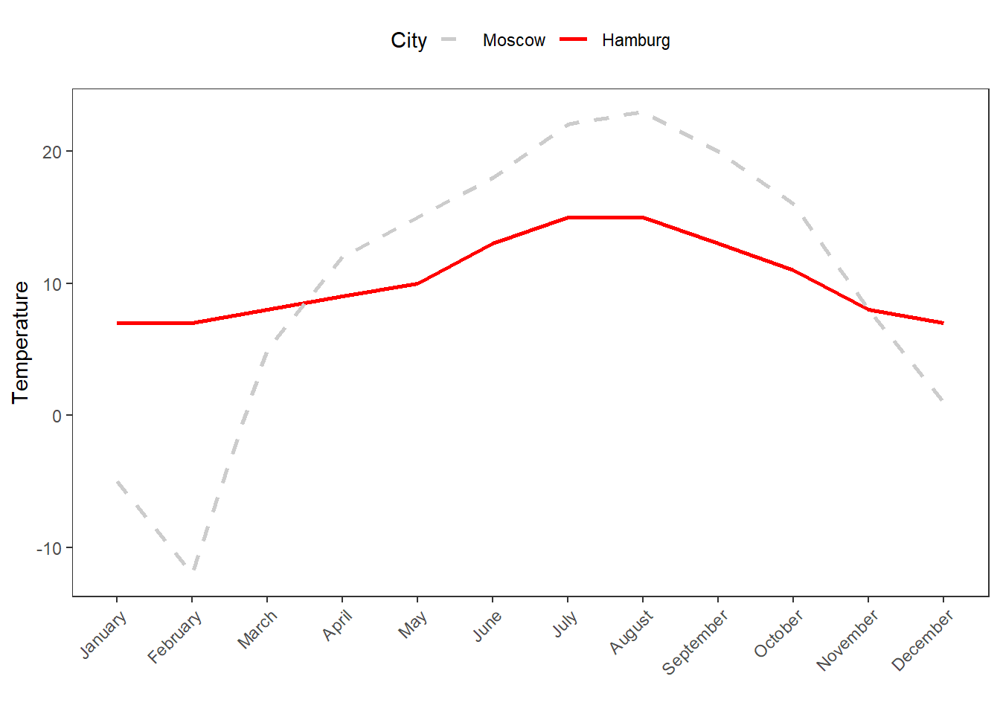

Grade | classA | classB |
|---|---|---|
A | 2 | |
B | 5 | 8 |
C | 10 | |
D | 12 | 10 |
F | 2 | 4 |
6 Descriptive Statistics
What This Session Covers
Statistics can be divided into two main branches: descriptive statistics (describing and visualising data - this session) and inferential statistics (drawing conclusions about populations from samples - from Week 8 onward). This session covers:
- Measures of central tendency - mean, median, and mode, and when to use which
- Measures of variability - range, variance, standard deviation, and standard error
- Confidence intervals - parametric and bootstrapped intervals for means and proportions
This week, we focus on how to describe and summarize data (see e.g. Bickel and Lehmann 2012; Thompson 2009). To show why data summaries are useful, think of the following: you are teaching two different classes in the same school, in the same grade, and at the same level. Both classes take the same exam and, after correcting and grading the exams, someone asks you which class performed better. You could of course say something along the lines of Well, class A had 5 Bs, 10 Cs, 12 Ds, and 2 Fs while class B had 2 As, 8 Bs, 10 Ds, and 4 Fs.
But this answer is not really satisfying. Descriptive statistics enable you to summarize complex data sets in very few words and using only very basic, and easy to understand, concepts. And this is what we will be dealing with in the following.
Before delving deeper into what descriptive statistics is, it is useful to have a general idea of how it can be contextualized. Thus, on a more general note, we will be dealing only with one particular subbranch of statistics. Statistics in general can be defined as a branch of mathematics that deals with data collection, organization, analysis, interpretation, and presentation. As such, statistics can be subdivided into two main areas. Descriptive statistics deals with the description of data and their visualization, while inferential statistics deals with data analysis and interpretation. Typically, this means testing assumptions about correlations between variables (see for example here). As stated above, here, we will be dealing with the description of data, especially with measures of central tendency, measures of variability and confidence intervals.
6.1 Measures of Centrality
Key concept: Mean vs. median
The mean (arithmetic average) uses every value in the data, which makes it efficient but also sensitive to outliers: a single extreme value can pull it far away from the bulk of the data. The median (the middle value when the data are ordered) is robust against outliers. Rule of thumb: report the mean for roughly symmetric distributions without extreme values, and the median for skewed distributions or data with outliers (e.g. reaction times, word frequencies, income).
In linguistics three measures of centrality or measures of central tendency are of particular relevance: the mean, the median and the mode (Gaddis and Gaddis 1990). In addition, there are two more measures of central tendency, the geometric and the harmonic mean which we will only briefly discuss as they are not that relevant for language research. What measure is appropriate depends on the type of variable scaling, the distribution of the data, and what is the intended aim of the data summary.
Means | Use |
|---|---|
(Arithmetic) mean (average) | Description of normally distributed numeric variables (most common measure of central tendency) |
Median (middle value) | Description of non-normal numeric variables or ordinal variables (skewed data or influential outliers) |
Mode (most frequent value) | Description of nominal and categorical variables |
Geometric mean (average factor) | Description of dynamic processes such as growth rates |
Harmonic mean (average rate) | Description of dynamic processes such as velocities |
In the following we will go over these types of measures of central tendencies, exemplify their use, describe their strengths and weaknesses, and show how to calculate them in R.
Mean
The mean is used when the data is numeric and normally distributed. The mean is calculated by applying the formula shown below.
\[\begin{equation} \bar{x}=\frac{1}{n} \sum_{i=1}^n x_i = \frac{x_{1}+x_{2}+ \dots + x_{n}}{n} \end{equation}\]
To calculate the mean, sum up all values and divide by the number of values. See the example below for clarification.

Consider, we are interested in the mean length of sentences in a short text, then the first thing we could do would be to list the sentences and their length in a table.
Sentences | Words |
|---|---|
Call me Ishmael | 3 |
Some years ago -- never mind how long precisely -- having little or no money in my purse, and nothing particular to interest me on shore, I thought I would sail about a little and see the watery part of the world. | 40 |
It is a way I have of driving off the spleen, and regulating the circulation. | 15 |
Whenever I find myself growing grim about the mouth; whenever it is a damp, drizzly November in my soul; whenever I find myself involuntarily pausing before coffin warehouses, and bringing up the rear of every funeral I meet; and especially whenever my hypos get such an upper hand of me, that it requires a strong moral principle to prevent me from deliberately stepping into the street, and methodically knocking people's hats off--then, I account it high time to get to sea as soon as I can. | 87 |
To calculate the mean, we need to divide the sum of the number of words per sentence (145) by the number of sentences (7) (see the equation below).
\[\begin{equation} \frac{3+40+15+87}{4} = \frac{145}{4} = 36.25 \label{eq:mittel2} \end{equation}\]
The mean sentences length in our example is 36.25 words
In R, the mean is calculated as follows.
# create numeric vector
frequencies <- c(3, 40, 15, 87)
# calculate mean
mean(frequencies)[1] 36.25The mean is the most common way to summarize numeric variables and it is very easy and intuitive to understand. A disadvantage of the mean is that it is very strongly affected by outliers which is why the median is the preferable measure of centrality when dealing with data that is not normal or that contains outliers.
Median
The median can be used for both numeric and ordinal variables. In contrast to the mean, it is more robust and not as easily affected by outliers. While the mean is commonly associated with numeric data that is normally distributed, the median is typically used when dealing with non-normal numeric or ordinal variables, i.e. variables that are ordered but not truly numeric. The median is the central value in a de- or increasing ordering of values in a vector. In other words, 50 percent of values are above and 50 percent of values are below the median in a given vector.
If the vector contains an even number of elements, then the two central values are summed up and divided by 2. If the vector contains an uneven number of elements, the median represents the central value.
\[\begin{equation} median_{x}= \begin{cases} x_{\frac{n+1}{2}} & n\text{ uneven} \\ \frac{1}{2}\bigl(x_{\frac{n}{2}}+x_{\frac{n+1}{2}}\bigr) & n\text{ even} \end{cases} \label{eq:median} \end{equation}\]

Let’s have a look at an example. Consider you are interested in the age stratification of speakers in the private dialogue section of the Irish component of the International Corpus of English (ICE). When tabulating and plotting the age variable you get the following table and graph.
Age | Counts |
|---|---|
0-18 | 9 |
19-25 | 160 |
26-33 | 70 |
34-41 | 15 |
42-49 | 9 |
50+ | 57 |

The age groups represent an order factor which means that there are categories with a natural order (here from old to young or vice versa). If we order speakers according to their age from young to old, we get a vector of length 320. If we then take the central value, i.e. the value of the 160th speaker, we get the median age in the private dialogue section of the Irish component of the International Corpus of English (ICE).
In R, the median is calculated as shown below.
# create a vector consisting out of ranks
ranks <- c(rep(1, 9), rep(2, 160), rep(3, 70), rep(4, 15), rep(5, 9), rep(6, 57))
# calculate median
median(ranks)[1] 2In our case, the median age is 19-25 because the 160th speaker belongs to the 2nd age group, i.e. the age group with speakers between 19 and 25 years old.
Mode
The mode is typically used when dealing with categorical variables and it reports which level of a factor or a categorical variable is the most frequent.

Here is an example to illustrate the mode. Consider you are interested where most speakers in the private dialogue section of the Irish component of the International Corpus of English are currently residing and you get the following distribution.
CurrentResidence | Speakers |
|---|---|
Belfast | 98 |
Down | 20 |
Dublin (city) | 110 |
Limerick | 13 |
Tipperary | 19 |

The tabulated and visualized data show that the mode is Dublin (City), because the largest group (110 speakers) of speakers in the corpus are speakers from the city of Dublin. This means that the average speaker in in the private dialogue section of the Irish component of the International Corpus of English (ICE) is from Dublin city.
In R the mode is calculated as shown below:
# create a factor with the current residence of speakers
CurrentResidence <- c(rep("Belfast", 98), # repeat "Belfast" 98 times
rep("Down", 20), # repeat "Down" 20 times
rep("Dublin (city)", 110), # repeat "Dublin (city)" 110 times
rep("Limerick", 13), # repeat "Limerick" 13 times
rep("Tipperary", 19)) # repeat "Tipperary" 19 times
# calculate mode
names(which.max(table(CurrentResidence))) # extract which level occurs most frequently[1] "Dublin (city)"A word of warning is in order here as only the first(!) maximal value is provided by R even if several categories have the same frequency.
Geometric mean
The geometric mean represents a measure of central tendency that is used when dealing with dynamic processes where the later elements are dependent on the previous elements. The geometric mean is calculated according to the equation below.
\[\begin{equation} \bar{x}_{geometric} = \sqrt[n]{x_1 \times x_{i+1} \times \dots \times x_n} \end{equation}\]
Imagine you have the option to buy two different stock packages and you have to buy one of them. Which one would you buy?
Year | Package1 | Package2 |
|---|---|---|
Year 1 | +5% | +20% |
Year 2 | -5% | -20% |
Year 3 | +5% | +20% |
Year 4 | -5% | -20% |
Is one package better than the other? Did one package perform better than the other?
- Package 1:
- Return: \(1.05 \times .95 \times 1.05 \times .95 = .995\) (0.5% loss)
- Year-over-year average: \(.995^{1/4}\) = ~0.125% loss per year
- Package 2:
- Return: \(1.2 \times .8 \times 1.2 \times .8 = 0.9216\) (7.84% loss)
- Year-over-year average: \(.9216^{1/4}\) = ~2% loss per year.
Package 2 performs substantially worse because here, the changes in growth depend on the previous growth rates.
Harmonic mean
The harmonic mean is a measure of central tendency that provides us with the average rate and is used when dealing with dynamic processes that involve velocities and distances. The harmonic mean is calculated according to the equation below.
\[\begin{equation} \bar{x}_{harmonic} = \frac{n}{\frac{1}{x_i} + \frac{1}{x_{i+1}} + \frac{1}{x_{i+\dots}} + \frac{1}{x_n}} \end{equation}\]
Let’s use an example to see what the harmonic mean describes. For example, we make a round trip to work and back. The way to work is 60 kilometers. On the way to work, we can only travel at 30 kmh while we can go 60 kmh on the way back. The distance is the same but, crucially, the time we spend on the road is different for the trip to work (2 hours) compared to the trip back home (1 hour). Half of the results (distance traveled) comes from the first rate (30 kilometers per hour) and the other half from the second rate (60 kilometers per hour). The result is that is takes us 3 hours to get to work and back.
\[\begin{equation} \bar{x}_{harmonic} = \frac{2}{\frac{1}{30} + \frac{1}{60}} = \frac{2}{\frac{2}{60} + \frac{1}{60}} = \frac{2}{\frac{3}{60}} = \frac{2}{1} \times \frac{60}{3} = \frac{120}{3} = 40 \end{equation}\]
The reason why using the arithmetic mean is inappropriate in such cases is the following: The idea behind the arithmetic mean is that we calculate a single value that can replace all values in a given distribution and the sum of the mean values is identical to the sum of the observed values.
Applied to this example, taking the geometric mean would translate into driving 3 hours with an average speed of 45 kmh which would amount to 135 km (and this is wrong!). Thus, we need to take the speed at which we travel as well as the time with which we travel with a specific speed into account.
So, the average is a single element that replaces each element. In our example, we have to drive at 40 kilometers per hour (instead of 30) to work and 40 kilometers per hour (instead of 60) to get back from work to get to the same place in the same time.
Notes on Measures of Centrality
As suggested above, the mean is strongly affected by outliers (which is why in such cases, the median is the more appropriate measure of central tendency). To illustrate this, imagine you are interested whether the use of discourse particles differs across two corpora. The two corpora represent the speech of the same five speakers but in different situations and the speech thus represents different registers. In a first step, you calculate the relative frequency of discourse particle use and both corpora have a mean of 13.4 particles per 1,000 words. Given the mean, the two corpora do not seem to differ. However, when tabulating and plotting the use of particles by speaker and across these two corpora, it becomes immediately clear that the mean is not the appropriate measure of central tendency as the distributions are very dissimilar.
Corpus | Speaker | Frequency |
|---|---|---|
C1 | A | 11.4 |
C1 | B | 5.2 |
C1 | C | 27.1 |
C1 | D | 9.6 |
C1 | E | 13.7 |
C2 | A | 0.2 |
C2 | B | 0.0 |
C2 | C | 1.1 |
C2 | D | 65.3 |
C2 | E | 0.4 |

The Figure above shows that the use of discourse particles is distributed rather evenly across speakers in Corpus 1 while the distribution is very uneven in corpus 2. In corpus 2, 4 out of 5 speakers use almost no discourse particles and only one speaker, speaker D, makes excessive use of discourse particles in corpus 2. The high usage frequency of discourse particles by speaker D in corpus 2 causes the mean of corpus 2 to be identical to the mean reported for corpus 1 although the distribution of usage rates differs drastically. This means that reporting the median in addition to the mean can be useful if the distribution of values is very uneven (or non-normal or skewed).
To exemplify, we will summarize the distribution of discourse particles in the two corpora: the use of discourse particles in corpus 1 (mean = 13.4, median = 11.4) is substantially different from the use of discourse particles in corpus 2 (mean = 13.4, median = 0.4).
6.2 Measures of Variability
Key concept: Standard deviation vs. standard error
The standard deviation (SD) describes how much individual data points vary around the mean - it is a property of the data. The standard error (SE) describes how much the sample mean would vary if we repeated the study many times - it is a measure of the precision of an estimate and shrinks as the sample grows (SE = SD/√n). Confusing the two is a classic error: error bars showing SE look much tighter than error bars showing SD, so always state which one you report.
Measures of variability provide information about the distribution of values such as whether the data are distributed evenly and do not differ substantially or whether the data are rather heterogeneous and are distributed very unevenly (Thompson 2009). In the following, we will have a look at the variance and the standard deviation.
As before, we will use a practical example to see the usefulness of applying measures of variability. Imagine you dealing with two cities, let’s say Moscow and Hamburg, that have the same mean temperature per year. However, the variability of temperatures varies differs dramatically between the Moscow and Hamburg.
Month | Moscow | Hamburg |
|---|---|---|
January | -5.00 | 7.00 |
February | -12.00 | 7.00 |
March | 5.00 | 8.00 |
April | 12.00 | 9.00 |
May | 15.00 | 10.00 |
June | 18.00 | 13.00 |
July | 22.00 | 15.00 |
August | 23.00 | 15.00 |
September | 20.00 | 13.00 |
October | 16.00 | 11.00 |
November | 8.00 | 8.00 |
December | 1.00 | 7.00 |
Mean | 10.25 | 10.25 |

In the following, we will discuss and calculate different measures of variability for the two cities.
Range
The range is the simplest measure of variability and reports the lowest and highest value of a distribution. That is, the range provides minimum and maximum of a vector to show the span of values within a distribution.
In R, the range is extracted as shown below.
# create a numeric vector
Moscow <- c(-5, -12, 5, 12, 15, 18, 22, 23, 20, 16, 8, 1)
min(Moscow); max(Moscow) # extract range[1] -12[1] 23The lowest temperature value for Moscow is -12 degrees Celsius and the highest value is 23 degrees Celsius. The range thus spans from -12 to 23.
Interquartile range (IQR)
The interquartile range (IQR) denotes the range that encompasses the central 50 percent of data points and thus informs about how values are distributed. This means that the IQR spans from the first quartile that encompasses 25 percent of the data to the third quartile that encompasses 75 percent of the data.
The easiest way to extract the IQR in R is to apply the summary function to a vector as shown below and then subtract the value of the 1st quartile from the value of the 3rd quartile.
summary(Moscow) # extract IQR Min. 1st Qu. Median Mean 3rd Qu. Max.
-12.00 4.00 13.50 10.25 18.50 23.00 The summary function reports that the minimum temperature is -12 degrees Celsius and that the maximum temperature is 23 degrees Celsius. Also, the lower 25 percent of the data fall within -12 and 4 degrees Celsius (from the minimum value to the 1st quartile) and the upper 25 percent fall within 18.5 and 23 degrees Celsius (from the 3rd quartile to the maximum value). The IQR range represents a range that encompasses the central 50% of the data and thus represents the value that can be calculated by subtracting the value of the 1st from the value of the 3rd quartile..
Thus, the IQR is 18.5 - 4 = 14.5
.
Variance
The variance is calculated according to the formula below. To calculate the variance, each value is subtracted from the mean and the result is squared. The squared values are then added and the resulting sum is divided by the number of values minus 1.
\(s = \sigma^2 = \frac{1}{n-1} \sum_{i=1}^{n} (x_i - \bar{x})^{2}\)
For our example, the variance of temperatures for Moscow is 123.6591 and 9.477273 for Hamburg.
In R, the variance is calculated as shown below.
sd(Moscow)^2[1] 123.6591Standard deviation
The standard deviation (abbreviated with capital \(sigma\) \(\sigma\)) is calculated according to first equation shown below or, alternatively, according to second equation shown below and it is the square root of the squared variance.
\(\sigma = \sqrt{s} = \sqrt{\frac{1}{n-1} \sum_{i=1}^{n} (x_i - \bar{x})^2}\)
\(\sigma = \sqrt{\frac{ \sum_{i=1}^{n} (x_i - \bar{x})^2}{n-1}}\)
For our example, the first equation shown above provides a standard deviation of 11.12 for Moscow and a standard deviation of 3.08 for Hamburg.
In R, the standard deviation is calculated as shown below.
# calculate standard deviation
sd(Moscow) [1] 11.12021The standard deviation of temperature values of Moscow is 11.12.
Standard Error
The standard error is a measure of variability and it reports the average distance from some parameters (most often from the mean). It is calculated as the standard deviation of the residuals of the parameter in question. To exemplify the standard error, we will have a look at reaction times which show how fast participants realized that a sequence of letters were either existing words or just a sequence of letters.
RT | State | Gender |
|---|---|---|
429.276 | Sober | Male |
435.473 | Sober | Male |
394.535 | Sober | Male |
377.325 | Sober | Male |
430.294 | Sober | Male |
289.102 | Sober | Female |
411.505 | Sober | Female |
366.191 | Sober | Female |
365.792 | Sober | Female |
334.034 | Sober | Female |
444.188 | Drunk | Male |
540.866 | Drunk | Male |
468.531 | Drunk | Male |
476.011 | Drunk | Male |
412.473 | Drunk | Male |
520.845 | Drunk | Female |
435.682 | Drunk | Female |
463.421 | Drunk | Female |
536.036 | Drunk | Female |
494.936 | Drunk | Female |
The standard error of the mean is calculated using the equation below.
\[\begin{equation} \sigma~{\bar{x}}~ =\frac{\sigma}{\sqrt{n}} \end{equation}\]
The standard error can be calculated manually (see below) by implementing the equation from above.
sd(rts$RT, na.rm=TRUE) /
sqrt(length(rts$RT[!is.na(rts$RT)])) [1] 14.76925An easier way to extract standard errors is to use the describe function from the psych package (see below)
# describe data
psych::describe(rts$RT, type=2) vars n mean sd median trimmed mad min max range skew kurtosis
X1 1 20 431.33 66.05 432.88 432.9 60.4 289.1 540.87 251.76 -0.2 -0.13
se
X1 14.776.3 Confidence Intervals
Confidence intervals provide an estimation of in-between which values the reported value would lie in the population with a confidence of, e.g., 95 percent.
\[\begin{equation} \bar{x} \mp z \frac{s}{\sqrt{n}} \end{equation}\]
The z-value for 95% probability (a two-tailed) of a normal distribution is 1.96. To check this, we can use the qnorm function and extract the z-value for a probability of .975 - we do not use .95 because we want 2.5% of the lower tail (-1.96) and 2.5% of the higher tail (1.96).
qnorm(0.975) [1] 1.959964This means that for a 95% confidence interval for normally distributed data, we can use the formula shown below.
\[\begin{equation} \bar{x} \mp 1.96 \frac{s}{\sqrt{n}} \end{equation}\]
If we have a vector of values (e.g., 4,5,2,3,1,4,3,6,3,2,4,1), we can easily calculate the confidence intervals for the mean as follows.
# calculate mean
m <- mean(c(4,5,2,3,1,4,3,6,3,2,4,1))
# calculate standard deviation
s <- sd(c(4,5,2,3,1,4,3,6,3,2,4,1))
# calculate n
n <- length(c(4,5,2,3,1,4,3,6,3,2,4,1))
# calculate lower and upper ci
lower <- m-1.96*(s/sqrt(n))
upper <- m+1.96*(s/sqrt(n))
# show lower ci, mean, and upper ci
lower; m; upper[1] 2.302388[1] 3.166667[1] 4.030945There are several functions in R to extract confidence intervals. To show how you can do this for different types of elements, we will continue to work with the reaction times data.
Confidence Intervals for Simple Vectors
Confidence intervals (CIs) give a range that’s likely to include a population value with a certain degree of confidence. As such, CIs tell us how likely it is to get a value within a certain range if we drew another sample from the same population.
One easy method for extracting confidence intervals is to apply the CI function from the Rmisc package.
# extract mean and confidence intervals
Rmisc::CI(rts$RT, ci=0.95) upper mean lower
462.2382 431.3258 400.4134 The CI function provides the mean reaction time (431.3258) and the 95 percent confidence band. With 95 percent confidence, the mean reaction time will have a mean between 400.41 and 462.24 milliseconds (ms).
Another alternative to extract the man ans the confidence interval from a range of values is to use the MeanCI function from the DescTools package.
# extract mean and confidence intervals
DescTools::MeanCI(rts$RT, conf.level=0.95) mean lwr.ci upr.ci
431.3258 400.4134 462.2382 This method is particularly interesting because it uses bootstrapping or resampling the data. As such, it is an empirical method to extract the mean and the confidence intervals. The values will differ given how many samples are drawn and we can get very precise estimates using this method.
# extract mean CIs
DescTools::MeanCI(rts$RT, method="boot", type="norm", R=1000) mean lwr.ci upr.ci
431.3258 402.0659 459.5996 Because this is a data-driven approach, the results will vary, depending on the characteristics of the resampled data. To illustrate, compare the values provided above to the values generated below.
# extract mean CIs
DescTools::MeanCI(rts$RT, method="boot", type="norm", R=1000) mean lwr.ci upr.ci
431.3258 403.2725 458.8470
Exercises: The Mean
Q1. What is the arithmetic mean of: 1, 2, 3, 4, 5, 6?
Q2. Which R function calculates the arithmetic mean of a numeric vector?
Q3. A corpus contains five texts with the following word counts: 200, 250, 210, 180, and 1500. Why might the mean NOT be the best summary of typical text length here?
Bickel, Peter J, and Erich L Lehmann. 2012. “Descriptive Statistics for Nonparametric Models IV. Spread.” In Selected Works of EL Lehmann, 519–26. Springer.
Gaddis, Gary M, and Monica L Gaddis. 1990. “Introduction to Biostatistics: Part 2, Descriptive Statistics.” Annals of Emergency Medicine 19 (3): 309–15.
Thompson, Cheryl Bagley. 2009. “Descriptive Data Analysis.” Air Medical Journal 28 (2): 56–59.